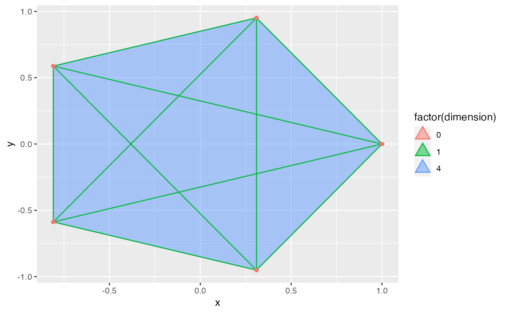
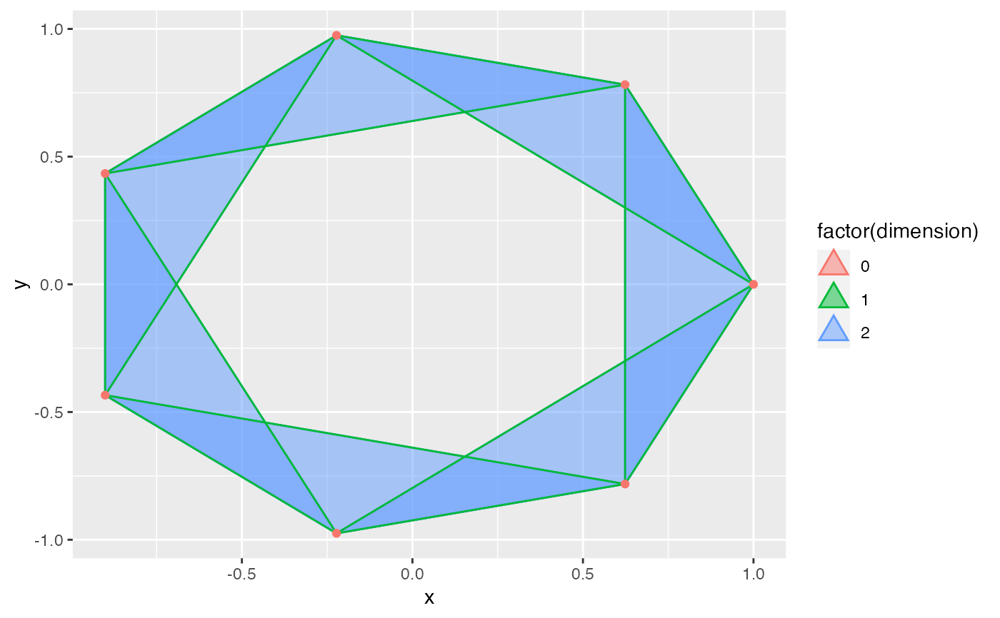

The simplex key is equivalent to the polygon key except that
it renders triangles rather than squares. This evokes the triangularity
of simplices and distinguishes plots from plots of arbitrary polygons.
draw_key_simplex(data, params, size)A single row data frame containing the scaled aesthetics to display in this key
A list of additional parameters supplied to the geom.
Width and height of key in mm.
# regular pentagon
fifths <- (seq_len(5) - 1) * 2 * pi / 5
pentagon <- data.frame(x = cos(fifths), y = sin(fifths))
ggplot(pentagon, aes(x, y)) +
geom_simplicial_complex(
diameter = 2, dimension_max = 5L, one_simplices = "all",
engine = "simplextree",
aes(color = after_stat(factor(dimension)),
fill = after_stat(factor(dimension))),
alpha = .5
)
#> Warning: Using alpha for a discrete variable is not advised.

# regular septagon
sevenths <- (seq_len(7) - 1) * 2 * pi / 7
septagon <- data.frame(x = cos(sevenths), y = sin(sevenths))
ggplot(septagon, aes(x, y)) +
geom_simplicial_complex(
diameter = 1.6, dimension_max = 5L, one_simplices = "all",
engine = "simplextree",
aes(color = after_stat(factor(dimension)),
fill = after_stat(factor(dimension))),
alpha = .5
)
#> Warning: Using alpha for a discrete variable is not advised.
